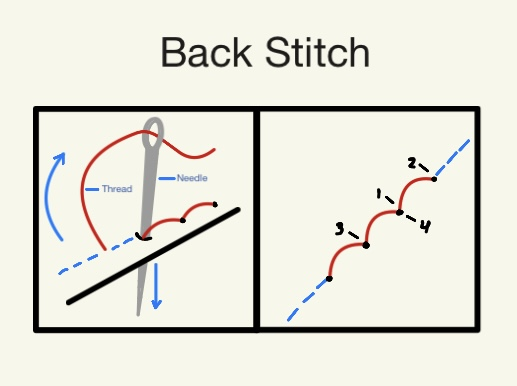
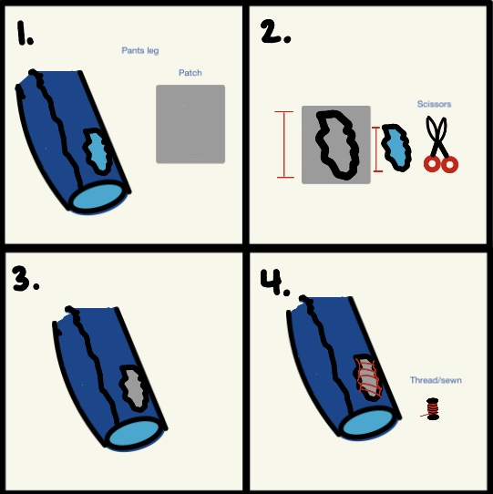

Attaching an External Patch

class="- topic/image "/>
class="- topic/image "/>- Cut a patch that extends at least one-half (1/2) inch beyond the damaged area on all sides.
- Place the patch over the hole.
- Pin the patch in place.
- Sew around the patch edge using a back stitch.
- Bring the needle up through the fabric.
- Insert the needle one stitch length behind your starting point. Bring the needle back up one stitch length ahead.
- Bring the needle back up one stitch length ahead.
- Continue sewing by repeating these steps to create a strong line of stitches.
- Remove the pins.